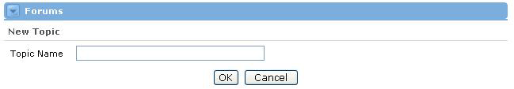
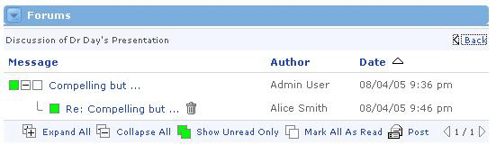
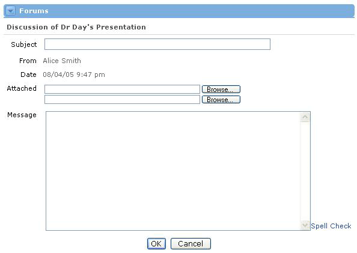
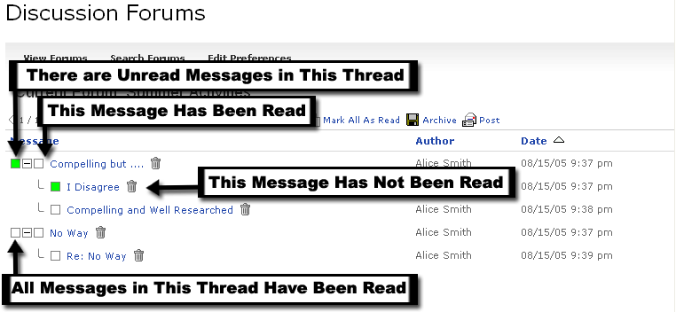
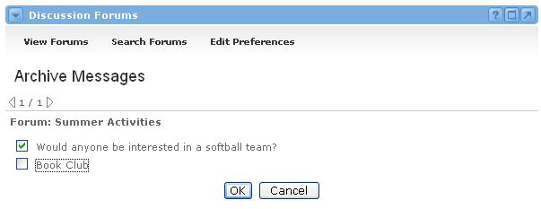
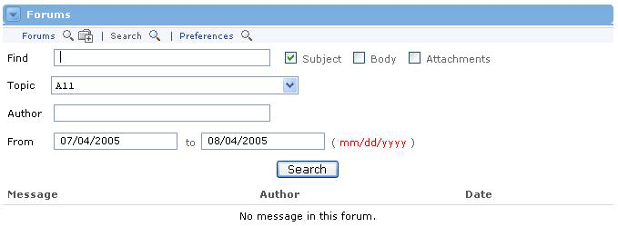
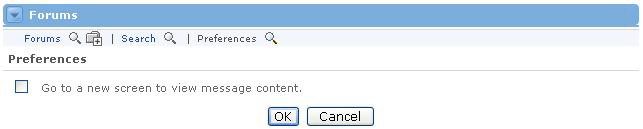
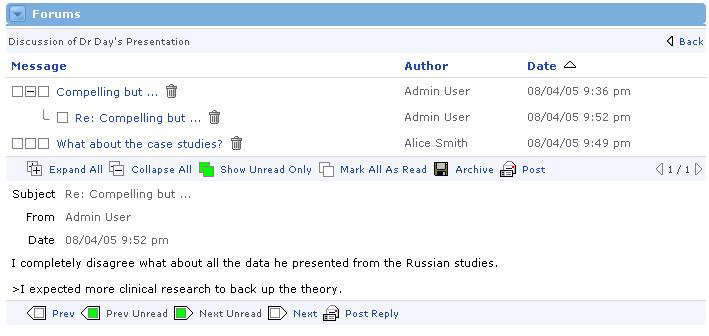

Groupware Forums Channel
Looking for more help options? Click Here
Using Forums
The Discussion Forums Channel is a forum for the users associated with the current offering. A discussion board (known also by various other names such as discussion group, discussion forum, message board, and online forum) is a general term for any online "bulletin board" where you can leave and expect to see responses to messages you have left.
The Forums Channel consists of two main elements: Topics and Messages. All messages must be posted within a topic. Therefore, topics serve as a means to group messages by a certain subject.

Topics
A topic must first be created (by someone who has permissions to do so) before anyone can post a message.
To create a topic, simply follow these steps:
- Click the Add icon at the top of the channel.
- Enter the name of this particular forum Topic.
- Click the OK button.
- The new Topic will now appear in the channel when a user clicks the Show Forum Topics link.

Topics can be edited or deleted at any time by users who have appropriate permissions. To do so, first click the Show Forum Topics link in the default channel view. Next, locate the desired forum topic and click on the Edit or Delete icon, respectively. Keep in mind that deleting a Topic will also delete all messages within that topic.

Posting a Message
After a Topic has been created, messages can be posted by anyone who has the appropriate permissions. To post a message to a specific Topic, follow these steps:
- Click on the topic name where the message should appear.
- At the bottom of the channel, several buttons appear. Click the Post button, signified by a letter and envelope icon.

The message form now appears, to begin entering your post:
- Type a subject for the message.
- The From field automatically defaults to the user who is currently logged in.
- If there are attachments to include, enter the path to the files or click the Browse button to navigate to the appropriate files.
- Type the message text in the Message field. If you type a URL into your message body, it will automatically link users to that website in a new window.
- Click the Spell Check link to check the spelling of the text within the body of your message.
- When the message is finished, click the OK button at the bottom of the form.
- The message has now been posted.

Viewing and Replying to a Message
Viewing a message is easy. Follow these steps:
- The columns to the right of each topic display how many unread (New) and total messages exist in each topic.
- Click on a topic to access these messages.
- Messages are grouped according to subject. Any replies to the first message appear below it.
- A box appears to the left of each message. If the box is green, this message has not yet been read. If the box is white, the currently logged-in user has already viewed the message.
- If a message has replies associated with it, there will be a plus or minus button next to the parent message. Click this button to expand or collapse the message tree.
- To view a message, click on the message.
- To delete a message (if appropriate permissions are available), click the Delete icon button to the right of the message.
| Be careful when deleting messages. When you delete a message, all of its replies (if any) will also be deleted. |

Archiving MessagesOccasionally, the Forums channel may become cluttered with out-of-date and/or inappropriate messages. In this case, archiving is the best option. The Archive feature will temporarily remove an entire thread (including the first message and all subsequent replies) from the channel. This is not a permanent deletion; archived messages can be recovered.
To archive a thread, follow these steps:
- Select the Topic for which threads will be archived.
- Click the Archive icon button at the bottom of the channel.
- Check the box next to the message thread(s) that should be archived.
- Click the OK button.
- The thread(s) are no longer visible to any users on the main Forum view for that topic.
To "unarchive" a message thread, simply follow the same steps above and uncheck any threads that need to be recovered. If a thread is checked, it is archived. If it is unchecked, it is visible.

Searching the Forums
The Forums Channel may eventually become highly populated with messages. In this event, the Search feature will come in handy. This feature allows searches on text within a message, within the subject, or on attachment files. Message searches can be refined to locate posts from within a specific topic, by a specific author, or by posting dates.
To conduct a search, follow these steps:
- From the main Forum view, click the Search button at the top of the channel.
- Enter the text to find in the Find field.
- Check the boxes where the search should take place: Subject, Body, and/or Attachments.
- Decide which Topic(s) to include in the search. Choose either All topics, or pick a specific one.
- If the message Author is known, enter that in the Author field to help refine the search.
- Enter dates in the From and To fields to search during a specific time period. Note that the required date format is mm/dd/yyyy.
- Click the Search button to begin the search.
- Results will appear beneath the search section. If you desire more or fewer results, refine your search accordingly and click the Search button again. Once you've found the message, click on its title to view it.

The Preferences link allows users to change the presentation of posts within the Forums Channel. On the Preferences screen, users can choose, whether message content should be viewed in a new screen or within the same screen

If the preference to go to a new screen to view message content is not selected, the forum presentation will appear as in the screenshot below. Allowing the user to view both the contents of an individual post and the hierarchical message tree.
